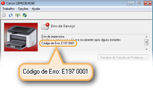
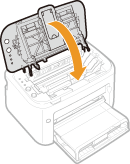

0KU8-03F
Uma mensagem de erro aparece na Janela de Status da Impressora quando há um problema com o processamento de impressão, quando a impressora não consegue se comunicar ou quando algum outro problema impede a operação normal. Veja a lista a seguir para mais informações sobre as mensagens de erro.
Não é Possível Comunicar-se com a Impressora
A comunicação bidirecional não está habilitada.
Ative a comunicação bidirecional e reinicie o computador.
Verificando a comunicação bidirecional
Verificando a comunicação bidirecional
Em um ambiente de conexão terminal, a impressora é redirecionada e um problema de configuração impede a comunicação.
Se a impressora foi redirecionada em um ambiente de conexão terminal, como um aplicativo de área de trabalho remota ou XeAPP (MetaFrame), pode haver um problema com o firewall ou outras configurações que impedem a comunicação com a impressora. Verifique as configurações de comunicação entre o servidor e o cliente. Para obter mais detalhes, contate seu administrador de rede.
Não é Possível Comunicar-se com o Servidor
Seu computador não está conectado com o servidor de impressão.
Faça a conexão devida entre o computador e o servidor de impressão.
O servidor de impressão não está em operação.
Inicie o servidor de impressão.
A impressora não está compartilhada.
Faça as devidas configurações de compartilhamento da impressora.
Guia de instalação do driver de impressora
Guia de instalação do driver de impressora
Você não possui privilégios de usuário para conectar ao servidor de impressão.
Peça ao administrador do servidor de impressão para alterar seus privilégios de usuário.
[Descoberta de rede] não está habilitada. (Windows Vista/7/8/Server 2008/Server 2012)
Ativar a [Descoberta de rede].
Ativando a [Descoberta de rede]
Ativando a [Descoberta de rede]
Verifique o Papel
O tamanho de papel especificado no driver da impressora é diferente do tamanho de papel do último trabalho de impressão.
Ao tentar imprimir com a impressora após alterar a configuração de tamanho de papel, esta mensagem é exibida para solicitar-lhe que verifique o tamanho do papel. Verifique o tamanho do papel que está carregado na multi-purpose tray ou abertura de alimentação manual.
Quando o tamanho de papel especificado no driver da impressora coincide, ou quando você quer imprimir usando o papel atualmente carregado
Sem carregar novo papel, pressione a tecla  (Papel) ou clique em
(Papel) ou clique em  na Janela de Status da Impressora.
na Janela de Status da Impressora.
(Papel) ou clique em na Janela de Status da Impressora. Quando tamanho de papel especificado no driver da impressora não coincide
Carregue o papel do tamanho especificado e pressione a tecla (Papel) na impressora.
Carregando papel na bandeja multifuncional
Carregando Papel na Abertura de Alimentação Manual
(Papel) na impressora. Carregando papel na bandeja multifuncional
Carregando Papel na Abertura de Alimentação Manual
Verifique a Saída Impressa
O tamanho de papel especificado no driver da impressora é diferente do tamanho de papel efetivamente carregado.
Carregue o papel do tamanho especificado e pressione a tecla (Papel) na impressora.
Carregando papel na bandeja multifuncional
Carregando Papel na Abertura de Alimentação Manual
(Papel) na impressora. Carregando papel na bandeja multifuncional
Carregando Papel na Abertura de Alimentação Manual
O trabalho pode não ter sido impresso normalmente.
Se estiver fazendo a impressão de um lado, você pode clicar em para continuar a imprimir. Se você continuar a imprimir e os resultados não forem satisfatórios, imprima o trabalho novamente.
para continuar a imprimir. Se você continuar a imprimir e os resultados não forem satisfatórios, imprima o trabalho novamente. Se estiver imprimindo frente e verso, pare a impressão, e então, imprima o trabalho novamente.
Cancelando trabalhos de impressão
Cancelando trabalhos de impressão
Verifique a Impressora
O cartucho de toner não está configurado.
Configure o cartucho de toner corretamente.
Como substituir os cartuchos de toner
Como substituir os cartuchos de toner
Ainda há papel atolado dentro da impressora.
Verifique minuciosamente em busca de fragmentos de papel que podem estar dentro da impressora. Se encontrar algum pedaço de papel, remova-o. Se o papel for difícil de remover, não tente retirá-lo à força da impressora. Siga as instruções no manual para remover o papel.
Eliminando os atolamentos de papel
Eliminando os atolamentos de papel
Erro de Comunicação
A impressora não está conectada com um cabo USB.
Conecte a impressora ao computador usando um cabo USB.
Guia de instalação do driver de impressora
Guia de instalação do driver de impressora
A impressora não está ligada.
O indicador  (Energia) não acende se a impressora não estiver ligada. Ligue-a. Se a impressora não responder quando você pressionar o interruptor de alimentação, verifique para ter certeza de que o cabo de alimentação está corretamente conectado e tente novamente ligar a energia.
(Energia) não acende se a impressora não estiver ligada. Ligue-a. Se a impressora não responder quando você pressionar o interruptor de alimentação, verifique para ter certeza de que o cabo de alimentação está corretamente conectado e tente novamente ligar a energia.
Ligando a máquina
(Energia) não acende se a impressora não estiver ligada. Ligue-a. Se a impressora não responder quando você pressionar o interruptor de alimentação, verifique para ter certeza de que o cabo de alimentação está corretamente conectado e tente novamente ligar a energia. Ligando a máquina
Impressora Incompatível
Outra impressora que não esta impressora está conectada.
Conecte a impressora ao computador corretamente.
Conectando a uma rede LAN sem Fio
Conectando a uma rede LAN sem fio
Conectando a uma rede LAN sem Fio
Conectando a uma rede LAN sem fio
 |
|
Se não souber como fazer uma conexão USB, consulte Guia de instalação do driver de impressora.
|
Porta Incorreta
A impressora está conectada a um suporte não suportado.
Verifique o roteador.
Verificando a porta da impressora
Verificando a porta da impressora
|
|
|
Se a porta que você precisa não está disponível
Se você está usando uma conexão de rede, configure a porta. Configurando as portas da impressora
Se você está usando uma conexão USB, reinstale o driver da impressora. Guia de instalação do driver de impressora
|
Memória de Impressora Insuficiente
O documento sendo impresso contém uma página com uma grande quantidade de dados.
Esta impressora não pode imprimir os dados. Clique em  para cancelar o trabalho de impressão.
para cancelar o trabalho de impressão.
para cancelar o trabalho de impressão. Erro de Comunicação de Rede
A impressora não está conectada através da rede.
Faça a conexão de rede entre o computador e a impressora.
Conectando a uma rede LAN sem Fio
Conectando a uma rede LAN sem fio
Conectando a uma rede LAN sem Fio
Conectando a uma rede LAN sem fio
A impressora não está ligada.
O indicador (Energia) não acende se a impressora não estiver ligada. Ligue-a. Se a impressora não responder quando você pressionar o interruptor de alimentação, verifique para ter certeza de que o cabo de alimentação está corretamente conectado e tente novamente ligar a energia.
Ligando a máquina
(Energia) não acende se a impressora não estiver ligada. Ligue-a. Se a impressora não responder quando você pressionar o interruptor de alimentação, verifique para ter certeza de que o cabo de alimentação está corretamente conectado e tente novamente ligar a energia. Ligando a máquina
A comunicação está restrita por um firewall.
Pergunte ao administrador do sistema da impressora sobre o problema.
Usando firewalls para restringir a comunicação
Usando firewalls para restringir a comunicação
Se a impressora não puder ser acessada por conta de configurações incorretas, use o botão de reset para inicializar as configurações de gerenciamento do sistema.
Inicialização com o botão de reset
Inicialização com o botão de reset
Sem Papel ou Papel Não Alimentado
Não há papel na multi-purpose tray ou abertura de alimentação manual ou o papel não pôde ser alimentado.
Instale o papel corretamente e pressione a tecla (Papel) na impressora.
Carregando papel na bandeja multifuncional
Carregando Papel na Abertura de Alimentação Manual
(Papel) na impressora. Carregando papel na bandeja multifuncional
Carregando Papel na Abertura de Alimentação Manual
Atolamento de Papel na Impressora
Ainda há um atolamento de papel dentro da impressora.
Não tente remover à força o papel atolado na impressora. Siga as instruções no manual para remover o papel.
Eliminando os atolamentos de papel
Eliminando os atolamentos de papel
Erro de Serviço
Ocorreu um erro dentro da impressora.
Desligue a impressora, espere pelo menos 10 segundos e ligue-a novamente. Se a mensagem não reaparecer, você pode continuar usando a impressora.
Se a mesma mensagem reaparecer depois de religar a impressora, desligue-a, desconecte o plugue de alimentação da tomada de energia CA e contate seu agente local autorizado Canon. Anote o código de erro que é exibido, e tenha-o em mãos quando contatar o agente local autorizado Canon.

Tampa Superior Aberta
A tampa superior não está completamente fechada.
Feche a tampa superior firmemente.

|
|
|
Se a tampa superior não fechar completamente, verifique se o cartucho de toner foi inserido até o final.
|